![RefraQ & Vorso - Biomes (Cut Ver.) (Ducknorriss) [Hard]](./TT4RO64.covers/11-4113389.jpg)
| # | BID | Beatmap Info | Mods | Notes |
|---|---|---|---|---|
| 1 | 4473782 | 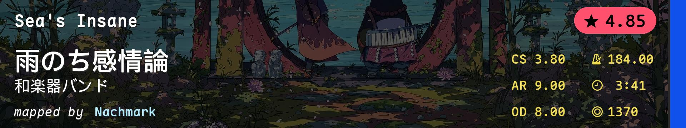 | NM | Aim Consistency |
| 2 | 4202191 | 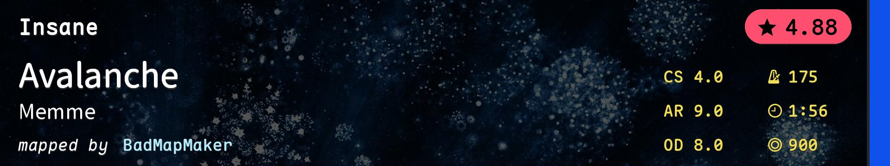 | NM | Streams |
| 3 | 4543164 | 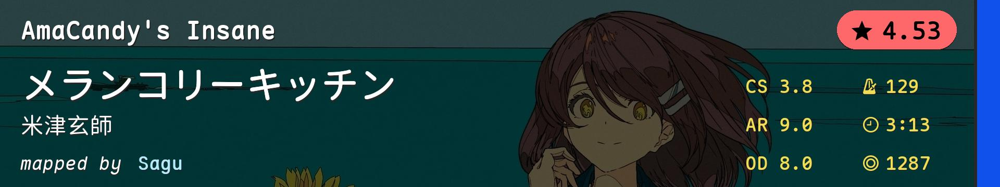 | NM | Alt |
| 4 | 4014151 | 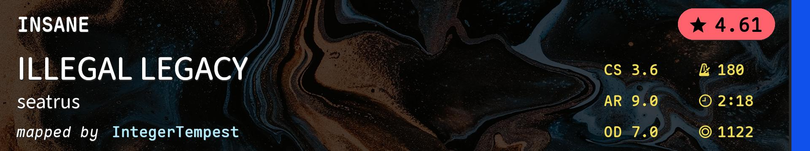 | NM | Slider Tech, Light Mechanics |
| 5 | 4250278 | 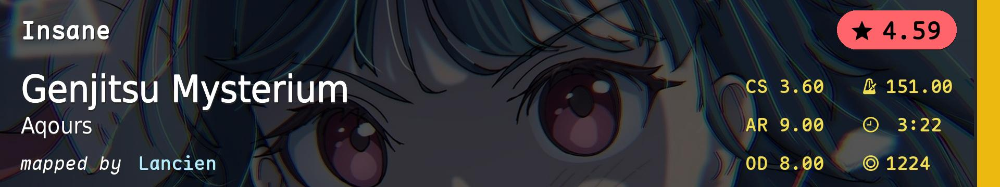 | HD | HD Technical Flow Aim |
| 6 | 2448615 | 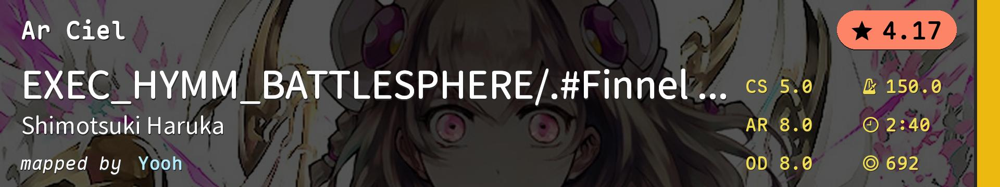 | HD | HD AR8 Old Map |
| 7 | 3516184 | 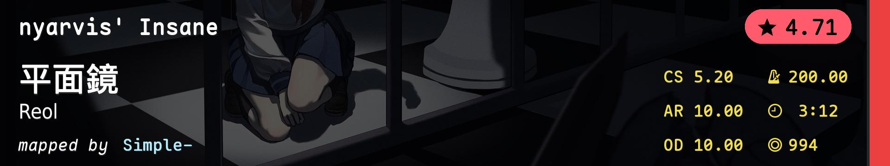 | HR | HR Aim Consistency |
| 8 | 4615284 | 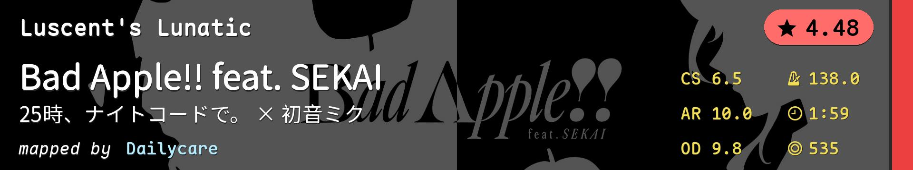 | HR | HR Precision Linear Aim |
| 9 | 4356379 | 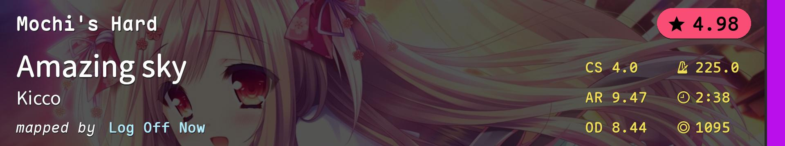 | DT | DT Consistency |
| 10 | 3745540 | 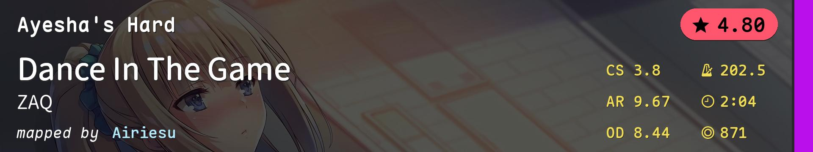 | DT | DT Bursts |
| 11 | 4113389 | |
DT | DT Finger Control |
| 12 | 4495373 | 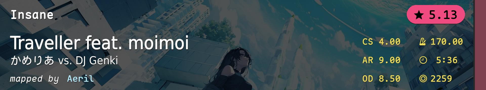 | TB | Tiebreaker |